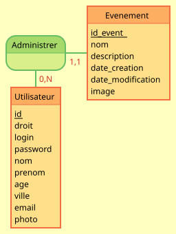
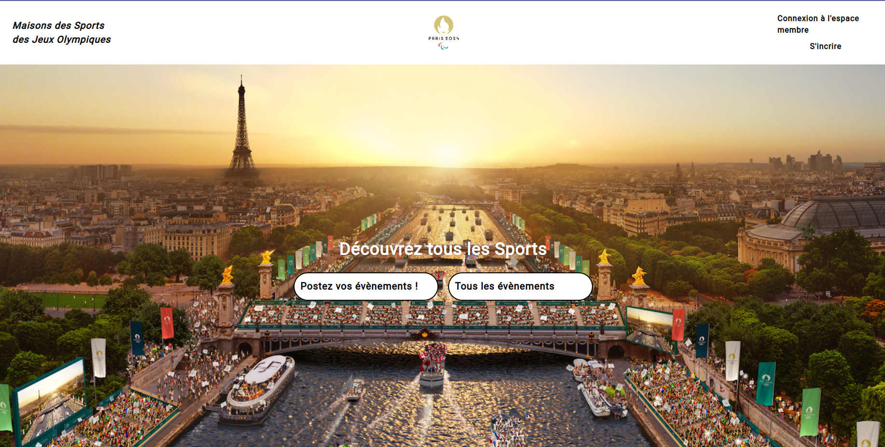

Projet M2L Web

Les Bases du Projet
Réalisation d'une Plateforme Sportive sous Laravel 10.x
Contexte :
Vous êtes développeur chez une entreprise spécialisée dans la création de plateformes communautaires.
Votre prochain projet consiste à développer une plateforme dédiée aux passionnés de sports. Cette plateforme
permettra aux utilisateurs de découvrir, partager et organiser des événements sportifs, tout en connectant une large
communauté de sportifs et de supporters.
Objectif :
Créer une plateforme dynamique et conviviale avec le framework Laravel 10.x. Cette plateforme doit permettre aux utilisateurs
de s'inscrire, de partager leurs exploits sportifs, d'organiser et de participer à des événements,
et de se connecter avec d'autres passionnés de sport.
Configuration Initiale :
- Installer Laravel 10.x.
- Configurer la base de données (MySQL).
Authentification et Gestion des Utilisateurs :
- Implémenter le système d'inscription et de connexion des utilisateurs (utiliser Laravel Breeze ou Jetstream pour une solution rapide et sécurisée).
- Créer des profils utilisateurs permettant d'afficher les informations personnelles, les photos, et les exploits sportifs.
Gestion des Événements Sportifs :
- Développer un module pour la création, la modification et la suppression d'événements sportifs.
- Implémenter une vue calendrier pour afficher les événements à venir.
- Ajouter des filtres pour rechercher des événements par sport, date et localisation.
Partage de Contenus :
- Intégrer la possibilité de publier des articles, des photos et des vidéos sur les exploits sportifs des utilisateurs.
- Mettre en place un système de notifications pour informer les utilisateurs des nouveaux événements, des
interactions et des mises à jour importantes.
Tableau de Bord Administrateur :
- Développer un tableau de bord pour les administrateurs afin de gérer les utilisateurs et les événements,
modérer les contenus, et analyser les statistiques d'utilisation de la plateforme.
Résultat Attendu :
Une plateforme moderne et intuitive qui rassemble les passionnés de sport. Les utilisateurs peuvent y découvrir et
partager des moments sportifs inoubliables, organiser des événements, et se connecter avec une communauté active.
Chaque fonctionnalité doit être optimisée pour offrir une expérience utilisateur fluide et engageante, faisant du
sport un véritable mode de vie pour ses membres.
Quelques détails
Pour réaliser aux mieux cette application il nous a fallu établir les fondamentaux :
Le MCD :- 
Une Vue (principe Modèle,Vue,et Controller dans les framework MVC) incluant le style que l'on adoptera pour toute la plateforme:- 